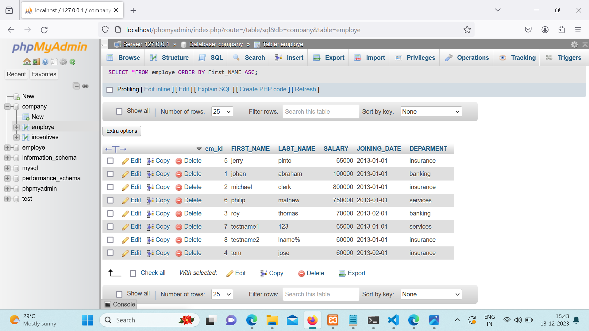

SELECT max(SALARY) from employe where SALARY<(SELECT MAX(SALARY) from employe);

CREATE TABLE employe (em_id INT AUTO_INCREMENT PRIMARY KEY,First_NAME varchar(255),LAST_NAME varchar(255),SALARY INT,JOINING_DATE varchar(255),DEPARMENT varchar(255))
INSERT INTO employe VALUES ('null','johan','abraham','100000','2013-01-01','banking'),('null','michael','clerk','800000','2013-01-01','insurance'),('null','roy','thomas','70000','2013-02-01','banking'),('null','tom','jose','60000','2013-02-01','insurance'),('null','jerry','pinto','65000','2013-01-01','insurance'),('null','philip','mathew','750000','2013-01-01','services'), ('null','testname1','123','65000','2013-01-01','services'), ('null','testname2','lname%','60000','2013-01-01','insurance')
CREATE TABLE incentives (insentive_id int AUTO_INCREMENT PRIMARY KEY,EMPLOYE_REF_ID int,INCENTIVE_DATE varchar(255),INCENTIVE_AMT int)
INSERT INTO incentives VALUES('null','1','2013-02-01','5000'),('null','2','2013-02-01','3000'),('null','3','2013-02-01','4000'),('null','1','2013-01-01','4500'),('null','2','2013-01-01','3500')
SELECT FIRST_NAME “EMPLOYEE NAME” FROM employe;
SELECT FIRST_NAME ,year(JOINING_DATE),month(JOINING_DATE),day(JOINING_DATE) FROM employe;
SELECT *FROM employe ORDER BY First_NAME ASC;
SELECT *FROM employe ORDER BY SALARY DESC;
SELECT *FROM employe WHERE First_NAME LIKE '%o%'
SELECT * FROM employe WHERE monthname(JOINING_DATE)='january';
SELECT DEPARMENT,sum(SALARY) FROM employe group by DEPARMENT order by sum(SALARY) desc;
select DEPARMENT,max(SALARY) from employe group by DEPARMENT order by max(SALARY) asc;
SELECT FIRST_NAME,INCENTIVE_AMT from employe join incentives on employe.em_id=incentives. EMPLOYE_REF_ID where INCENTIVE_AMT>3000;
SELECT max(SALARY) from employe where SALARY<(SELECT MAX(SALARY) from employe);
select first_name,incentive_amt from employee left join incentives on employee.em_id=incentives. employee_ref_id;
SELECT DEPARMENT,MAX(SALARY) from employe group by DEPARMENT;